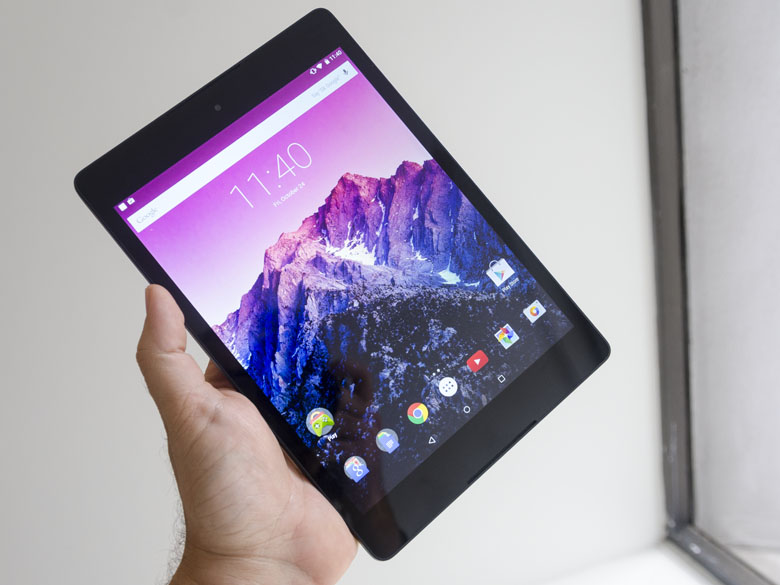
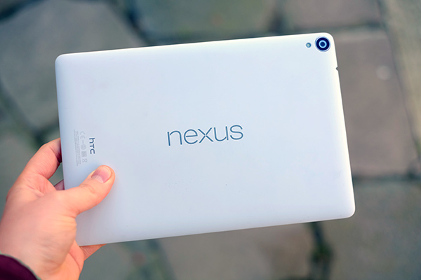

Nexus 9 - Review
The Nexus 9 by HTC is a tablet that's been a long time coming. It's the updated Nexus 7, it's the rebooted Nexus 10, and it's the Nexus 8 too. The tablet seems to have been through a number of internal iterations, mostly because the tablet market has evolved so rapidly of late. It saw Apple enter the mini tablet space, and then decide to effectively pull out by choosing to bring the most minimal updates possible to the iPad mini 3. So is the Nexus 9 the silver bullet Google needs to keep up the Android tablet charge? The Android market share is increasing, but at the cheaper end of the market where the quality isn't always as high. So teaming with HTC to offer an high-power, between-big-and-little tablet seems to be a good move if Google wants to kickstart the lust for the top end tablet. It's got some might competition - the Samsung Tab S is a rather lovely device in the Android space, and comes in 10.5- and 8.4-inch sizes, to flank this 9-inch (well, 8.9-inch) option. There's obviously the powerful and sleek iPad Air 2, and even Sony's Z3 Compact Tablet is a decent choice. So what's the big deal with the HTC Nexus 9? With a price tag of £319 ($399, about AU$450) for the 16GB option, and £399 ($479, about AU$545) for the bigger 32GB choice, this isn't the cheap Nexii we're used to. It's a powerhouse with some of the best internals on the market.
Design
The design is clearly led by HTC here, building on Asus' rubberised Nexus 7 and adding in some premium finishes. The larger device - which is now much wider by choosing a 4:3 screen ratio, rather than the 16:9 widescreen that's brilliant for movies - has the same feel to the back, but now comes with a metallic rim. This aids grip as well as improving the aesthetics of the tablet - and while in the black version it's harder to notice, the chamfered silver edges on the white (ish) model looks a lot more high-end. There's no microSD slot here, which I've come to expect on most Android tablets, meaning the extra cost of the 32GB model looks like the only way to safeguard yourself from larger apps or big HD movie libraries. The battery seems large enough at 6700mAh, but with the higher-res 2K screen it might need all that juice. The overall design of the Nexus 9 means that, unless you're blessed with massive hands, this is a two-palmed device to use easily. That's not a real problem as it's pretty light to hold, but I did miss the ability from the Nexus 7. Speaking of the screen, it's a decent effort indeed without being mind blowing. It's certainly high-res enough to match the iPad Air 2 in terms of pixel count, which means by having a 0.8-inch smaller display increases the sharpness. I didn't notice anything looking particularly crisp in general use, but then coming from using both the iPad Air 2 and mini 3 from recent reviews, perhaps that's because my eyes are used to such clarity. That said, I was very impressed with the deep blacks and overall contrast ratio of the screen, which meant I certainly had no gripes watching high-res YouTube clips during my testing time.
Interface
The Nexus 9 I was using was a developer's version of Android 5 / Lollipop, which means I was essentially playing with Android L. That said, it's a really nifty upgrade and it combines well with the larger and wider screen size on offer. Loading TechRadar on the Chrome browser wasn't the fastest experience, with a few lags with swiping, but that's very possibly down to not being final build. Everything else was swift and I enjoyed the new UI touches. The icons that twist around as you drag the notifications bar from the top of the screen, the unobtrusive windows asking which apps you'd like to use at the bottom, contextual menus - all looking very slick. The real downside I noted - and it's not a big one, given it's not a key part of the tablet experience - is the camera. Like every Nexus device, this seems more like a proving ground for the software than allowing users to take great photos. The Lens Blur effects just didn't work (again, possibly due to early software) and the overall snap quality wasn't high at all. The controls were nice and simple though, with swipes left and right getting you into your gallery or letting you choose new photo modes. There's even the chance to up the control level to include extra manual controls, so it's a nice mix for the casual and more professional user - although I need to see it with a better sensor, optics and, well, not on a tablet.
CPU
The big thing to note here is that HTC has switched away from Qualcomm here to go with an Nvidia K1 chipset. This probably won't mean a lot to many users, save to say it really improves the speed under the finger when flicking through the Nexus 9 and making the graphical prowess that much better. However, it makes the new tablet a good bet for the future, as with a 64-bit architecture in the tablet and available on the new iteration of Android, the two together will result in more powerful and useful apps. That said, there's only 2GB of RAM at the heart of the Nexus 9, which means it won't really be able to take advantage of the 64-bit ability, but will have some slight performance enhancements. It's actually only a dual core CPU, but don't let that put you off as the early benchmarking numbers for this tablet have been very impressive. I wasn't able to test the graphical powers of the tablet as I couldn't download any games onto it, but anecdotal evidence from around the web suggests it's going to be really rather fast indeed.
Early verdict
The HTC Nexus 9 is very much a, well, Nexus device. But without the lower price tag that used to accompany such devices. It does most things well, with a nice design, screen and packaging, while not forgetting to use a mediocre camera as usual. But there's very little else here to wow (save for the impressive front facing, rich speakers), which again is a hallmark of Nexus devices. That's not a bad thing though - just make sure you'll want that blank canvas, allowing you to slowly customise this well put together tablet into something you truly enjoy. For those that like simplicity, the higher-cost iPad might be attractive, but for a basic tablet you can make your own, the Nexus 9 looks a good bet.